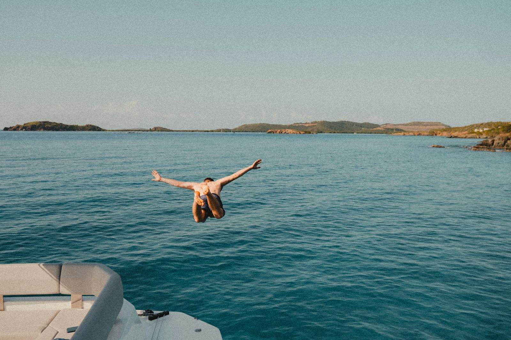

Choisissez votre sortie
Les deux excursions partent de la Riva à Pula et font le tour de l’archipel des Brijuni. La différence tient à ce que vous faites de ce temps : l’excursion de l’après-midi est pensée autour d’une longue baignade, celle du soir autour de la lumière.

Après-midi avec baignade
12:00–16:30 · 50 € par adulte. Une croisière panoramique autour des Brijuni et deux heures à St. Jerolim. Environ 4 h 30 au total, idéal pour les familles et les amateurs de baignade.

Coucher de soleil et dauphins
18:00–21:00 · 50 € par adulte. Une croisière du soir d’environ trois heures dans la lumière dorée, avec une chance d’apercevoir des dauphins. Pas de baignade ni de droit d’entrée au parc.
Déroulement de l’excursion de l’après-midi
- 12:00
Embarquement et départ
Nous quittons la Riva et mettons le cap sur les îles.
- Croisière
Autour des Brijuni
Une boucle panoramique tranquille, commentée par le guide.
- 2 h
Baignade à St. Jerolim
Deux heures pour nager, explorer les fonds avec masque et tuba et vous détendre dans une eau limpide.
- À bord
Repas et boissons
Poisson, burger ou plat végétarien, accompagné de vin, de jus de fruits et d’eau.
- 16:30
Retour sur la Riva
Nous rentrons à Pula en fin d’après-midi.

Déroulement de la sortie au coucher du soleil
Nous partons en début de soirée, naviguons autour des Brijuni et guettons les dauphins pendant que la lumière se pare d’or. Repas, boissons et musique sont au programme sur le pont, pour une sortie d’environ trois heures, jusqu’à 21:00.

Ce qui est inclus
- Un repas par personne : poisson, burger ou végétarien
- Vin, jus de fruits et eau minérale à volonté
- Musique et ambiance détendue à bord
- Un guide polyglotte
Tarifs
| Billet | Prix |
|---|---|
| Adulte, excursion de l’après-midi | 50 € |
| Adulte, coucher de soleil | 50 € |
| Enfants de moins de 3 ans | Gratuit |
| Enfants plus âgés | Nous consulter |
| Droit d’entrée à St. Jerolim (après-midi uniquement) | À régler sur l’île |
Point de rendez-vous et parking
Départ de la Riva, près de la marina ACI de Pula. Merci d’arriver 30 minutes avant le départ. Si vous venez en voiture, utilisez le parking payant près des arènes, à quelques minutes de marche à plat de la Riva. Les tarifs en vigueur figurent sur le site des parkings de Pula.